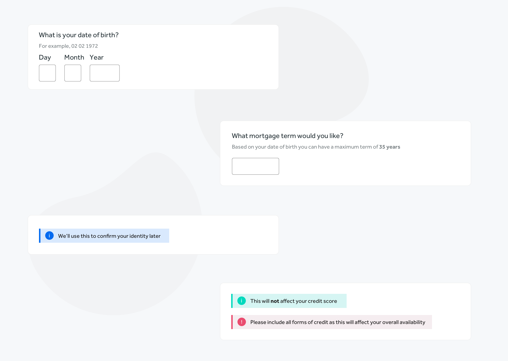

The Problem
Tools used:
Sketch, Overflow, Google analytics, FullStory
Research methods:
Service blueprint, user interviews, How Might We's,
Introduce design thinking and user research best practices to help improve Mojo's current product
offering. Establish
'Design Ops' processes to facilitate the growth of design within Mojo.
Run discovery and mapping workshops to shape the product roadmap, making sure we're always working
on the
'right' thing at the right time. My job was to be the voice of the user and custodian of Mojo's
visual output.
Research
Mojo have been making the majority of their product decisions based on
quantitive data. Tools like Google analytics, Power BI, Google optimise provided a wealth of raw
data, however, trends weren't being tracked, the data wasn't being pooled or reviewed. As a result
it becomes
increasingly hard to paint a clear picture of what success looks like for the product.
This also means that whilst Mojo knows a lot about 'how' someone uses their product, they know very
little of the 'why'. My task was to try and balance out Mojo's research debt by introducing more
qualitative user research methods such as; user
interviews, feedback channels, a way for users to self-serve common
questions and eventually, run remote usability tests.
The diagrams below were part of an audit of Mojo's current research landscape. The outcome of which
was
identifying that there are clear gaps, a 'monoculture' of research had begun to emerge.
Close
Process
Ask ten people what on-boarding means and you'll get ten different answers. At Mojo, we defined it
as beginning when
the user lands on the homepage, to booking an appointment with one of our advisors. To improve our
on-boarding experience we began
with a 2 day service mapping session. I ran these sessions along with another designer, in them we
invited collegues from different areas of the business (ops, dev, product, cx), walked them through
the journey we mapped out, asked them if they agreed with how we had mapped it and if they had any
amendments.
We then asked them to pinpoint any pain-points. By asking a good cross-section of experts, we made
sure we had a variety of view-points.
Next we reframed these paint points into general, high-level 'How Might We's. From there each HMW
becomes a kick-off for a separate white-board session with 2 or 3 product team collegues. Within
these sessions we'll agree on a loose idea, discuss contraints and timings.
Typically this sort of exercise would be combined with field research, speaking to real users,
collecting weeks/months of quantative research to help back up any assumptions we may have made
during the mapping workshops.

Improving the on-boarding experience
Many of the pain points that came out of our initial mapping sessions were related to the amount of
questions we ask a user up-front, and how little context we provide for asking them. From key
stakeholder interviews, we identified that users were frequently entering the wrong information,
skipping sections or dropping out of the journey altogether. This combined with a
user feedback via Intercom, Cx enquires and from watching usability videos on
FullStory - it was easy to start to identify key pain points.
As a result of our mapping and HMW exercises, we would provide more context via inline tooltips and
perfrom a question protocol to eliminate unneccessary questions. Tooltips should always be displayed
inline, if the information is important to the user it should never be hidden. I created rules and
patterns for 4 different types of tooltips.
Rules & patterns
1. The user needs to know the FORMAT of information they need to enter to answer the question
correctly.
2. The user needs to know WHAT restrictions apply to their answer.
3. The user needs to know WHY we're asking a question.
4. The user needs to know HOW this information will affect their quote or overall experience.
